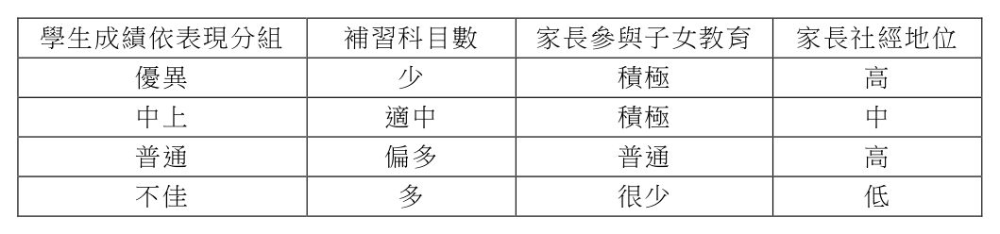
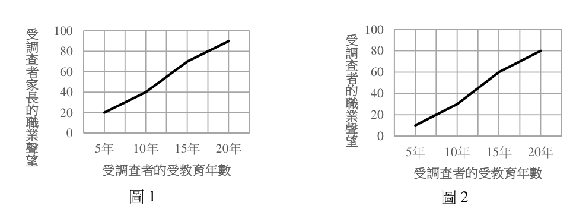
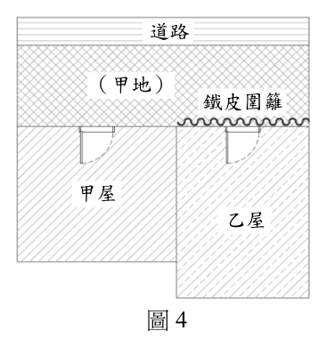
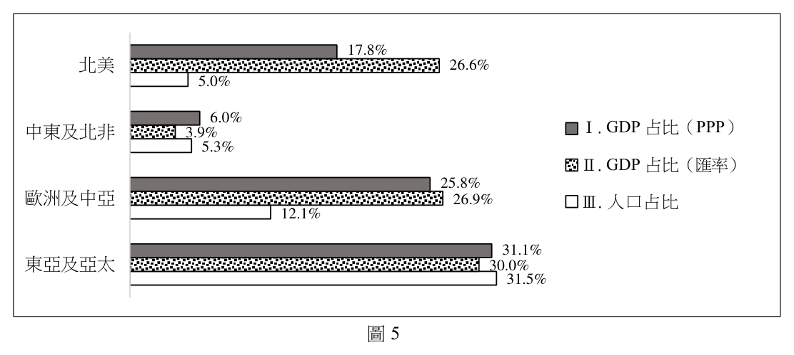

開卷有益 ／
分科測驗 ／ 公民與社會 ／ 112 年112 年分科測驗公民與社會試題與答案
這一頁是民國 112 年分科測驗公民與社會的整份歷屆試題，共 42 題，題目與標準答案出自大考中心 分科測驗歷年試題（依著作權法 §9，考試試題不受著作權保護），其中 42 題附有詳解。以下逐題列出題幹、選項與答案；要計時作答或記錄成績，請用線上練習。
大學入學考試中心原始場次代碼：分科公民與社會
線上作答這一科 →
全部 42 題
第 1 題
某研究指出,與過去相較,男性願意承擔家務勞動的比例明顯上升;然而,雙薪家庭裡,
女性仍是家務勞動的主要貢獻者。多數女性期待均等分工,但僅有薪資高的女性得以如
願。根據上述發現,從關切性別平權的角度,下列推論何者最適切?
（A） 人的精力有限,故市場勞動貢獻越多者越無法對家務勞動有貢獻（B） 職場的性別平等雖已充分落實,但家庭領域的性別平等仍待加強（C） 男性的性別平權意識已有顯著提升,但女性卻仍然受限於傳統觀念之束縛（D） 性平觀念雖普及,但雙薪家庭的市場勞動貢獻仍多立基於女性再生產勞動答案：（D）
詳解與考點 正解：材料一面指出女性仍是雙薪家庭家務的主要貢獻者，另一面指出薪資較高的女性才較能達成均等分工；這顯示市場勞動能否投入，仍常建立在女性承擔無酬家務與照顧工作的條件上。D同時扣住性別分工與再生產勞動的結構，故選D。
A：市場勞動與家務勞動不必是固定的零和關係，題幹反而顯示收入、資源與協商能力會影響家務分工。
B：材料沒有證明職場性別平等已充分落實；薪資高低能否換得均等分工，正顯示職場與家庭的權力關係仍相互牽連。
C：材料未把不均等歸因於女性的傳統觀念，較直接的線索是女性持續負擔較多家務，以及收入差異影響協商結果。
本題考點：性別分工（gendered division of labor）——分析雙薪家庭時，同時比較市場勞動與無酬家務由誰承擔；再生產勞動（reproductive labor）——照顧、家務等維持勞動力的工作若集中於一方，會限制其市場勞動選擇；實質平等（substantive equality）——不能只看形式上的共同就業，還要看資源與負擔是否對等。
第 2 題
許多人相信學生成績和家長社經地位具正相關。小辛想驗證此說法,因此蒐集周遭同學
成績及相關資料,同時加入「補習」及「家長參與子女教育活動」二項因素一併分析,
結果如表1。小辛從表1 可得到的最合理推論為何?
表1
學生成績依表現分組 補習科目數 家長參與子女教育 家長社經地位
優異 少 積極 高
中上 適中 積極 中
普通 偏多 普通 高
不佳 多 很少 低

（A） 不論家長社經地位為何,補習越多越能提升學生的成績表現（B） 家長對子女教育活動的參與,對子女學業成績影響相當有限（C） 家長社經地位較高,會促使其子女學業成績表現也較為優異（D） 高社經地位的家長若較少參與子女教育活動仍不利子女學業答案：（D）
詳解與考點 正解：判準是比較同一社經地位下的家庭參與差異，而不是把四筆觀察誤作單一因素的因果證明。高社經地位的兩組中，家長積極參與者對應優異表現，參與較少者對應普通表現；在給定資料裡，（D）最直接支持家長參與不足仍不利子女學業。故選 D。
A：補習科目較多的組別並未對應較佳表現，不能推論不論家長社經地位為何，補習越多必然越能提升成績。
B：表中家長參與程度與成績表現有共同變化，不能說其影響相當有限；分辨關鍵在資料不足以量化影響大小，不是影響不存在。
C：高社經地位同時出現在優異與普通兩組，顯示社經地位本身不能單獨保證優異成績。
本題考點：控制變項（control variable）——比較某一因素時，優先找其他條件相同而該因素不同的組別；相關與因果（correlation and causation）——觀察資料可支持較合理的關聯推論，不能直接宣稱單一因素必然造成結果；社會資本（social capital）——家長參與教育活動可作為家庭資源影響學習的線索，但仍須和其他條件一併判讀。
第 3 題
某國針對30 歲以上受調查者的受教育年數、職業聲望,及其家長的職業聲望進行調查,
結果如圖1 和圖2(縱軸數值愈高,表示職業聲望愈高)。依據二圖,對該國社會成員
的地位取得,下列哪項推論最適切?
受 100 100 受
調 80 調 80
查 查 者 60 60 者
家
40 的 40 長 職
的 20 業 20
職
業 0 聲 0 望
聲 5年 10年 15年 20年 5年 10年 15年 20年
望
受調查者的受教育年數 受調查者的受教育年數
圖1 圖2

（A） 家庭傳承給個人的社會階層位置不易改變（B） 子承父業現象普遍意味教育投入並無成效（C） 教育有效幫助低社經地位成員的向上流動（D） 國民平均教育提高使得整體社會地位上升答案：（A）
詳解與考點 正解：本題要把兩圖的關聯串起來判讀。受教育年數較高者有較高的自身職業聲望，同時也可見其家長職業聲望較高；教育機會與家庭背景相連，成年後的職業聲望仍受這個背景影響，顯示家庭傳承的社會階層位置不易改變，故選 A。
B：親子職業聲望相關不等於所有人都子承父業，也不能據此推論教育投入沒有成效；教育仍可能是地位取得的重要中介。
C：若要證明低社經地位成員向上流動，須比較相同教育程度下不同家庭背景者的地位改變。兩圖只呈現整體關聯，未提供這種流動結果。
D：圖中是個人的教育年數與職業聲望關聯，不能推出全體國民平均教育提高後，整體社會地位都會上升；職業聲望本身還帶有相對排序的性質。
本題考點：地位取得（status attainment）——判讀教育、家庭背景與職業聲望時，要看哪些變項彼此連動；代際流動（intergenerational mobility）——家庭背景與子代地位高度連結時，表示階層再製較強；相關與因果（correlation and causation）——圖表顯示關聯時，不可直接推出教育無效或全社會地位必然上升。
第 4 題
古巴在2022 年實施新版「家庭法」,不論同性伴侶與異性伴侶皆可締結婚姻,成為第
一個同性婚姻合法化的共產國家。從我國憲法基本權利角度,該法落實的人權,與下列
哪項社會運動訴求的人權屬性最接近?
（A） 多國女性串連訴求女性公開自身的受性騷擾經驗（B） 臺灣社會運動團體訴求的居住正義以及房市改革（C） 美國抗議警察針對黑人暴力執法所爭取的權利保障（D） 臺灣原住民族運動所爭取的土地正義與諮商同意權答案：（C）
詳解與考點 正解：同性伴侶與異性伴侶都可締結婚姻，核心是在法律上不因身分特徵而給予差別待遇，所落實的是平等權。（C）反對警方針對黑人暴力執法，同樣要求國家對不同身分群體給予平等的權利保障，故選 C。
A：公開受性騷擾經驗主要是透過表達與揭露促成公共討論，雖涉及性別平權，題幹所指的權利型態不如婚姻平等直接。
B：居住正義與房市改革主要關切適足居住及社會資源分配，較接近社會權議題。
D：原住民族土地正義與諮商同意權，著重原住民族的集體權利、文化與自決保障，和個人婚姻資格平等不同。
本題考點：平等權（right to equality）——看到同一法律資格是否因身分而不同時，先檢視是否構成差別待遇；基本權利類型（types of fundamental rights）——區分個人平等權、社會權與原住民族集體權利，再找權利性質最接近者。
第 5 題
某日發生殺人案,警方經調查後召開破案記者會,指出有充分證據顯示甲應為兇手,並
在回答媒體問題時,說明甲的姓名、家庭狀況等個資。記者根據警方提供的個人資料,
報導甲家人的新聞,之後甲被起訴,並經法院判決有罪確定。對於本案中警方與記者的
行為,下列評論哪項最適切?
（A） 因法院判決有罪,警方洩漏個資行為並未違反偵查不公開原則（B） 破案記者會的時間在起訴前,故警方並未違反偵查不公開原則（C） 警方提供記者與公益無關之嫌疑人個資,違反偵查不公開原則（D） 記者報導甲家人的相關新聞,其行為明顯違反偵查不公開原則答案：（C）
詳解與考點 正解：警察在起訴前的記者會中提供嫌疑人的姓名、家庭狀況等與公益無關的個資，題幹線索直接涉及偵查不公開對偵查機關的拘束。此時案件尚未經法院確定，警方不應以破案說明為由任意揭露個資，故（C）最適切，故選 C。
A：法院日後判決有罪，不會追溯消除警方在偵查階段不當揭露個資的問題。
B：起訴前正屬偵查與嫌疑人權益需要保護的階段，不能把記者會發生在起訴前當成不適用原則的理由。
D：偵查不公開主要拘束參與偵查的公務人員；記者報導可能另有隱私或新聞倫理問題，但不能僅據此直接定為明顯違反該原則。
本題考點：偵查不公開（confidentiality of investigation）——判斷時先看揭露者是否為偵查機關、資訊是否有公益必要；無罪推定（presumption of innocence）——案件未經確定前，公開資訊須避免造成不當定罪印象與人格侵害。
第 6 題
圖3 是房東甲(房屋所有權人)和房客乙的
< 房客乙
對話。依據對話內容,從民法債權和物權的
特性分析,下列敘述何者正確?
已讀 我們當初簽的一年租約快要到期了 房
（A） 租約到期後,甲得請求乙返還房屋 1:27 PM 東
已讀 你還欠我好幾個月的租金（B） 甲將房屋出租,即喪失房屋所有權 1:28 PM（C） 乙積欠租金,侵害甲的租金所有權 已讀 租約到期後請立刻搬走
1:28 PM（D） 丙為新承租人,可要求乙搬離甲屋 已讀 我已經把房子租給丙了
1:29 PM
你要租給別人沒有先問我 1:54 PM 房
客
我拒絕搬離 1:54 PM
圖3答案：（A）
詳解與考點 正解：租約期間屆滿後，房客占有房屋的契約基礎已消失；房屋所有權人甲得依租約關係請求乙返還房屋，故選 A。
B：出租只是讓乙在租期內使用收益，甲仍保有房屋的所有權；債權契約不會使不動產物權當然移轉。
C：乙未付租金時，甲受侵害的是對乙請求給付租金的債權，不是對尚未交付金錢的「租金所有權」。
D：丙與甲成立的新租約，原則上只使丙得向甲主張交付租賃物；丙不是原租約的出租人，不能直接以此要求乙搬離。
本題考點：租賃關係（lease）——租期屆滿或租約終止後，出租人可請求承租人返還租賃物；債權與物權（claim right and property right）——租金請求權是對特定人的債權，房屋所有權則是對世的物權；契約相對性（privity of contract）——新租約原則上只拘束新租約當事人，不能直接改變舊租約雙方的權利義務。
第 7 題
根據記載,春秋時期的齊國曾提倡穿綈服(一種絲、棉混織品),並禁止民眾生產,反
而用高於市價的價格自魯、梁兩國進口,魯、梁民眾因而放棄糧食生產,轉而投入生產
綈服。一年後,齊國突然禁止與魯、梁的貿易,造成兩國糧食價格高漲,導致兩國先後
投降齊國。從社會福祉的角度分析,下列哪種人民的損失是促使兩國投降的主因?
（A） 生產糧食的生產者剩餘（B） 購買糧食的消費者剩餘（C） 生產綈服的生產者剩餘（D） 購買綈服的消費者剩餘答案：（B）
詳解與考點 正解：題組的因果鏈是魯、梁人民改種綈服後，齊國斷絕貿易，兩國糧食價格高漲。糧食消費者必須以更高價格購買基本生活所需，能以原價格取得食物的利益大幅減少；廣大消費者剩餘的損失最能造成社會福祉惡化，故選 B。
A：糧食價格上升對仍有糧食可出售的生產者未必是損失，且題組描述的危機核心是食物取得成本提高。
C：綈服生產者在齊國高價收購時曾獲益，斷貿後雖受影響，但不足以說明糧價高漲所造成的廣泛民生壓力。
D：題組沒有指出綈服消費者因價格或數量變化遭受主要損失，重點在糧食供給與價格。
本題考點：消費者剩餘（consumer surplus）——商品價格上升時，購買者能獲得的淨利益下降；社會福祉（social welfare）——分析基本必需品短缺時，要看受影響人口廣度與消費損失。
第 8 題
某地區網路服務市場原本共有六家廠商,今年經併購後減少為四家。在不考慮其他條件
下,前述變動對該地區廠商聯合漲價難易度的影響,下列哪項分析最合理?
（A） 因彼此競爭激烈,消費者容易找到替代品,提升聯合漲價的難度（B） 因網路使用便利性提高,吸引更多人使用,提升聯合漲價的難度（C） 用戶共享網路服務,使廠商營運成本降低,更容易形成聯合漲價（D） 競爭家數減少,廠商為了獲取更高的利潤,更容易形成聯合漲價答案：（D）
詳解與考點 正解：市場廠商由六家減為四家，競爭者變少，彼此較容易觀察價格、協調行動並維持共同漲價。其他條件不變下，市場集中度提高會降低聯合行為的協調難度，因此（D）最合理，故選 D。
A：併購後廠商數已減少，不能從題幹推出競爭更激烈或替代品更容易取得；其分析方向與集中度提高相反。
B：網路使用人數增加影響的是需求規模，不直接決定廠商之間能否協調價格。
C：即使共享服務降低成本，也不能單憑成本下降推論廠商更容易達成並維持聯合漲價；聯合難度的關鍵是競爭結構。
本題考點：寡占市場（oligopoly）——廠商家數減少時，要檢視相互依賴與協調是否更容易；市場集中度（market concentration）——比較併購前後，先由競爭者數量判斷價格競爭壓力的變化。
◎ 阿米希人(Amish)是200 多年前因為受到宗教迫害而由瑞士遷移到美國的一群清教徒。 他們信仰堅定,自力更生,自己辦學,反對暴力,相信上帝的權柄而不透過政府的公權 力來解決爭端,更認為社群與家庭凝聚力是維持信仰的根基。此社群拒絕現代設施,過 著19 世紀般的儉樸生活。有學者指出,阿米希人不接受現代文明,認為新事物會影響 家族團結或使生活變複雜,更認為電力會導致對物質的過度追求,拒絕使用彰顯身分的 商品以避免人們的相互競爭。請問:
第 9 題
依據這位學者的判斷,阿米希人不使用電力及彰顯身分的商品,主要是為了避免造成下
列何種概念所描述的現象?
（A） 文化位階（B） 環境衝擊（C） 刻板印象（D） 階級複製答案：（A）
詳解與考點 正解：題組說阿米希人拒絕使用彰顯身分的商品，以避免彼此競爭；這是在防止物質與生活方式被拿來區分高低、形成文化上的位階。（A）文化位階最能對應以消費符號建立身分優劣的現象，故選 A。
B：電力或商品可能有環境影響，但題組給出的理由是避免物質追求與相互競爭，並非防止污染或資源耗用。
C：刻板印象是對群體作僵化概括的看法；題組未描述外界如何看待阿米希人，而是在談社群內部的身分競爭。
D：階級複製著重階級優勢透過家庭、教育與資源延續到下一代；拒用身分商品是避免當下以文化消費區分高低，概念不同。
本題考點：文化位階（cultural hierarchy）——看到品味、消費或生活方式被用來標示高低時，判斷是否形成象徵性的身分排序；階級複製（class reproduction）——題幹若重點是世代間資源與優勢延續，才適用此概念。
第 10 題
若欲對阿米希人表示尊重,並平等對待其信仰與特殊的社區生活,下列敘述何者最符合
多元文化主義的主張?
（A） 禁止觀光客參訪該社區,避免其與不同文化交流互動（B） 保障社群信念,以法律免除其接受學校體制國民教育（C） 推廣其符合自然生態的農業知識,達到永續發展理想（D） 鼓勵學術界踴躍研究阿米希社群,以保障其文化傳承答案：（B）
詳解與考點 正解：題組明示阿米希人重視宗教信仰、自己辦學與社群生活；多元文化主義的核心是讓少數社群能在平等地位維持其文化實踐，而非要求其完全同化。以法律調適其教育安排、免除接受一般學校體制國民教育，最直接保障其社群信念，故選B。
A：禁止觀光客進入著重隔離，既未處理社群自主權，也把文化互動一概排除，不能作為平等對待的原則。
C：推廣農業知識是肯定其實用價值，卻沒有回應其宗教信仰與社群自行生活的權利；看似正面，仍是以外部效益而非文化平等為中心。
D：學術研究可能增加認識，但研究者的觀察不等於社群具有自行維繫文化的制度保障。
本題考點：多元文化主義（multiculturalism）——遇到少數群體的文化實踐時，判準是能否承認其平等身分並保障自主延續；合理調適（reasonable accommodation）——一般制度若壓縮特定文化實踐，可用適當例外或替代安排減少不平等。
◎ 16 歲學生甲涉嫌性侵害,新聞報導後,群情激憤;有人找出甲的個資公布在網路上, 從而該市警察局要求刪文。乙明知甲並非高官丙的小孩,卻在網路上指稱「甲是丙的小 孩,因而丙下令警察要求網友刪文」,也號召群眾到丙住家抗議;抗議過程中,乙誤將 丙珍愛的花瓶打碎。丙因乙侵害其名譽並破壞花瓶,向法院提起訴訟。請問:
第 11 題
從人權保障的觀點,評論本案與甲有關的情節,下列敘述何者最適切?
（A） 警察局為維護甲的隱私要求刪文,無須法律依據（B） 甲如遭判刑確定,該項犯罪紀錄未來應加以塗銷（C） 為揭弊而揭露甲的個資,並未侵犯甲之隱私權利（D） 隱私應受保障,但因甲自身違法,無法要求賠償答案：（B）
詳解與考點 正解：題幹中的甲是16歲少年，且只是涉嫌犯罪；未成年人的身分與司法紀錄須受到較強保護，以避免其後續生活長期受標籤所害。若甲遭判刑確定，犯罪紀錄未來應依法處理為塗銷或不公開，符合少年保護與復歸社會的原則，故選B。
A：警察要求刪除涉及人民表意與資訊流通，公權力限制權利仍須有法律依據與正當目的，不能僅以維護隱私就免除依法行政要求。
C：網路公布甲的個資不是對公權力違失的揭弊；即使有公共討論需求，揭露未成年涉嫌者的可識別資訊仍可能侵害隱私。
D：甲是否違法不會使其隱私權當然消滅；權利受侵害時能否請求救濟，仍須依侵害與損害的要件判斷。
本題考點：隱私權（right to privacy）——判斷個資揭露時，要分開看公共利益、必要性與當事人身分；少年司法（juvenile justice）——涉及未成年人的犯罪紀錄時，優先考量去標籤化與復歸社會，而非永久公開；依法行政（principle of legality）——公權力限制權利必須有法律依據。
第 12 題
題文中丙提起之訴訟,依據我國現行法律,下列主張或請求何者正確?
（A） 丙可訴請法院,請法院判決除去其名譽所受侵害（B） 因名譽權屬人格權之損害,丙不可主張損害賠償（C） 丙因花瓶受損,可向乙請求相關財產損害之補償（D） 因花瓶毀損致精神上損害,丙可向乙請求慰撫金答案：（A）
詳解與考點 正解：名譽權受侵害時，受害人得依具體侵害情形請求除去侵害；丙可訴請法院判決除去其名譽所受侵害，故選 A。
B：人格權受侵害並不當然排除損害賠償；是否得請求，仍要依侵害行為、損害與可歸責性等要件判斷。
C：花瓶屬財產，若乙的毀損行為具故意或過失，通常應請求財產損害賠償；本選項使用「補償」一詞，且題幹未使該法律要件完整成立，不能直接視為正確。
D：單純財物毀損不會當然產生精神慰撫金請求，通常還須有法律所要求的進一步人格法益侵害或特別情形。
本題考點：人格權救濟（remedies for personality rights）——名譽受侵害時，要分辨除去侵害、回復名譽與損害賠償等不同請求；侵權行為（tort）——財物毀損要檢查行為、損害、因果關係與故意或過失；法律用語——財物侵權的通常請求是損害賠償，不宜把「補償」與「賠償」直接混用。
◎ 某國原住民族部落附近有一重大開發案引發地方議論,該部落成員在報紙投書指出:為 落實憲法對人民基本權利之保障,政府單位到部落的公有土地從事開發前,應諮商並取 得原住民族或部落的同意或參與。該國某國會議員注意到這則報紙投書,乃針對此開發 案的爭議,向主管機關首長提出質詢。請問:
112年分科 第 4 頁 請記得在答題卷簽名欄位以正楷簽全名
公民與社會 共 11 頁
第 13 題
依據題文訊息推論,該國政府體制最可能具有下列哪項特徵?
（A） 立法部門對於行政部門得提出不信任投票（B） 立法部門得對各部會首長行使人事同意權（C） 國家元首對於立法部門通過的法案擁有否決權（D） 國家元首得對立法部門提出中央政府總預算案答案：（A）
詳解與考點 正解：題組呈現國會議員就開發爭議向主管機關首長質詢，線索指向行政部門須對立法部門負政治責任的體制。在此脈絡下，立法部門可對行政部門提出不信任投票，是最能延伸這種責任關係的特徵，故選A。
B：各部會首長是否須經立法部門同意，取決於個別國家的任命制度；題幹的質詢關係不足以推出這項人事同意權。
C：國家元首的法案否決權常見於某些總統制或混合制安排，但題幹沒有提供元首與法案程序的資訊。
D：中央政府總預算通常由行政部門提出，再送立法部門審議；不能由題幹推成國家元首向立法部門提出。
本題考點：內閣責任制（parliamentary responsibility）——看到國會可監督並要求行政首長負責時，進一步檢查是否有不信任投票；權力制衡（checks and balances）——制度特徵須由題幹線索推論，不能把其他政府體制的權限一併套入。
第 14 題
從平等原則及人權的觀點檢視該部落成員的投書意見,以下評論何者最適切?
（A） 國家應無差別對待全體國民,故不應該採納其意見（B） 為尊重多元文化與原住民族權利,故應採納其意見（C） 為落實保障個別原住民的權利,故應該採納其意見（D） 公有地開發應由全民公投決定,故不應採納其意見答案：（B）
詳解與考點 正解：投書要求開發前諮商並取得原住民族或部落的同意或參與，主張的是原住民族作為文化群體對其生活領域的集體權利。從實質平等與人權觀點，尊重多元文化並採納這項程序性保障最為適切，故選B。
A：無差別對待是形式平等的說法，忽略原住民族因文化、歷史與土地關係所需要的特別保障；平等不等於一律不作差別處理。
C：投書的主體是原住民族或部落，不只是一位原住民個人的權利；分辨關鍵在集體文化與部落參與，而非單一個人權利。
D：是否開發不能只以全民公投取代受直接影響部落的諮商與參與，公投也不是否定其權利主張的理由。
本題考點：實質平等（substantive equality）——面對處境不同的群體，判斷是否需透過特別保障消除實質不利；原住民族權利（indigenous peoples’ rights）——涉及部落土地與文化時，注意諮商、同意與參與等集體程序保障；多元文化（multiculturalism）——尊重差異不是隔離，而是讓不同文化能平等參與公共決策。
◎ 依據我國法律,經營電信、廣播或電視頻道等媒體需領有國家通訊傳播委員會(NCC) 發給有一定年限的經營執照,到期前須申請換照,核准後才能繼續經營。某廣播電台甲 申請換照,但NCC 指出該電台的報導經常與事實不符而遭民眾投訴,且其大股東直接 介入新聞製播,顯示該電台內控與自律機制失靈,故在其執照到期後,決議不予換照。 甲電台則抨擊該決議侵害新聞自由,因而提起司法救濟;在野黨立委乙則召開記者會, 支持甲電台提出司法救濟的行動;輿論也有意見主張監察院應主動介入調查。請問:
第 15 題
題文中NCC 駁回換照申請的理由,與下列哪項主張最接近?
（A） 大眾未必具有媒體識讀能力,需要政府適時介入以確保人民知的權利（B） 基於黨政軍退出媒體的理念,媒體對新聞事件的評論應保持中立立場（C） 媒體惡性競爭可能造成劣幣驅逐良幣,政府介入是保障新聞自由的必要之惡（D） 媒體的守門過程可能遭受不當干擾且違反專業倫理,新聞自由不應無限上綱答案：（D）
詳解與考點 正解：NCC駁回換照的依據是甲電台報導常與事實不符，且大股東直接介入新聞製播，這些線索都指向媒體守門程序受不當干擾、內控與專業倫理失靈。新聞自由保障重要，但不能被理解成不受專業責任與制度監督的無限權利，故選D。
A：人民媒體識讀能力與知的權利固然重要，但題組的直接事實是內容失實與股東干預，並非政府為彌補閱聽人能力而介入。
B：黨政軍退出媒體處理的是特定政治勢力與媒體的控制關係，不表示媒體對所有新聞事件的評論都必須保持中立。
C：惡性競爭與劣幣驅逐良幣是市場競爭的論點；題組沒有以競爭程度作為不予換照的理由，最強線索仍是守門與自律失靈。
本題考點：新聞自由（freedom of the press）——判斷限制是否相關時，要同時看媒體自主與報導專業責任；媒體守門（media gatekeeping）——所有權人直接干預新聞製播時，須警覺編採自主與事實查核是否受損；媒體自律（media self-regulation）——內控失靈可成為評估執照監理的具體事實。
第 16 題
在下列何種情況下,憲法法庭得依法受理本案?
（A） 甲於行政訴願遭駁回後隨即聲請憲法法庭判決（B） 乙以個人的名義聲請憲法法庭對該案進行審查（C） 負責審理甲案件的法院聲請憲法法庭進行判決（D） 監察院主動向憲法法庭聲請審查法規是否違憲答案：（C）
詳解與考點 正解：本題問的是個案爭訟進入憲法法庭的適格途徑。若正在審理甲案件的法院認為必須適用的法規有違憲疑義，得停止相關程序並聲請憲法法庭作成判決；C正是具體個案中的法院聲請，故選C。
A：甲在行政訴願遭駁回後，通常仍須循行政訴訟等通常救濟程序；不能僅因訴願失敗就立即聲請憲法法庭。
B：個人不能只以自己的名義要求憲法法庭抽象審查個案；人民的憲法救濟須符合終局裁判與基本權受侵害等法定要件。
D：監察院是否調查屬監察權運作，不能因此當然對本案主動聲請憲法法庭審查法規。
本題考點：具體規範審查（concrete norm review）——審理中的法院認為應適用法規違憲時，才由法院聲請憲法法庭；權利救濟程序（remedies procedure）——先辨認行政救濟、通常法院與憲法救濟各自的要件，不能跳過法定程序。
◎ 冷戰結束後的數十年間,跨國企業曾無需擔心地緣政治因素,在全球拓展商業。然而, 近日有學者撰文指出,全球正劃分為二個互相競爭的集團,一個由西方領導,另一個由 中國領導,跨國企業不能再忽視地緣政治。另一項調查報告則指出,跨國公司管理階層 憂心與不憂心中國及其鄰近區域政治風險的比例,已經從2021 年的2:1,提升至目前 的20:1。不少跨國公司對於依賴中國製造及銷售的情況感到不安,也認為依照中國當 前的政治特性,目前唯一可以預測的就是它的不可預測性,因而計劃將部分製造、供應 鏈和銷售轉移到更友善的國家。請問:
第 17 題
依據題文,跨國公司所指的中國當前之不可預測性,其根源最可能為下列何者?
（A） 以黨領政導致政府效率不彰（B） 立法機關缺乏專業和自主權（C） 共產主義抗拒自由市場體制（D） 權力愈趨集中於個人與專斷答案：（D）
詳解與考點 正解：材料以「唯一可以預測的就是不可預測性」描述跨國公司對中國政治風險的憂慮，並把問題連到當前政治特性；最能解釋政策可能隨個人意志急遽變動的根源，是權力日益集中於個人與專斷決策，故選D。
A：政府效率不彰可能造成行政遲滯，但不必然造成政策方向難以預期，與材料強調的政治風險不完全相同。
B：立法機關缺乏專業或自主權可反映制衡較弱，卻沒有D直接指出決策權向個人集中所帶來的專斷性。
C：材料沒有把不可預測性歸因於拒斥市場；跨國公司擔憂的是政治決策風險，而非單純的經濟制度名稱。
本題考點：威權體制（authoritarianism）——分析政治風險時，觀察權力是否集中且缺乏有效制衡；個人化統治（personalist rule）——重大決策若高度依附個人意志，外部行動者較難依穩定規則預測政策。
第 19 題
依據題文推論,跨國公司的轉移計畫對於中國當年度勞動市場薪資的影響,最可能是下
列何者?
（A） 工廠外移減緩景氣動能,降低求職者尋職誘因進而薪資下滑（B） 工廠外移減少跨國企業的工作職缺,不利於薪資上漲的態勢（C） 銷售轉移導致民眾增加購買國貨,推升勞動供給與薪資上漲（D） 銷售轉移帶動企業投資,釋放職缺並帶動勞動供給推升薪資答案：（B）
詳解與考點 正解：題組說跨國公司計劃把部分製造、供應鏈與銷售移往其他國家，直接效果是中國境內由這些企業提供的職缺減少。勞動需求減弱時，勞工議價與薪資上漲的壓力都會下降，因此最可能不利於薪資上漲，故選B。
A：工廠外移首先減少的是企業對勞工的需求，不是以求職者尋職誘因下降為主要機制；把勞動需求與勞動供給混為一談。
C：銷售轉移表示市場與投資可能移出中國，不能推成中國民眾增加購買國貨並帶動薪資上漲。
D：銷售轉移不會在中國帶來更多投資與職缺，選項把題組所述的外移效果反向解讀。
本題考點：勞動需求（labor demand）——企業縮減產能或外移時，先判斷職缺需求是否左移；薪資決定（wage determination）——在其他條件不變下，勞動需求下降會削弱均衡薪資上升的力量；供需區分（supply and demand）——企業職缺變動屬需求面，求職意願變動才屬供給面。
◎ 我國房屋市場的「預售屋」是指尚未開始動工或正在施工,而預先銷售的房屋。有的建 商在預售屋銷售時,打出不實廣告,藉此促銷,例如:有建商在廣告文宣中呈現「空中 景觀泳池」的意象,但實為無景觀之一般泳池;另外,也有建商為營造購屋熱潮,形成 預期心理,哄抬建案價格,喊出「本案即將完銷」,但實際上該建案還有多戶未售出。 也有投資客看準購屋者的預期心理,搶先簽訂預售屋買賣契約,俗稱紅單,而後換約轉 售紅單,進行預售屋炒作,政府因而修改相關法律條文,規定預售屋買賣契約禁止讓與 或轉售。請問:
第 20 題
針對題文中建商的行為,下列論點何者合乎我國現行民法與相關法規範?
（A） 若無脅迫他人買賣房屋,政府基於契約自由無法介入（B） 政府可透過消保法或公平交易法管制建商的泳池廣告（C） 刊登廣告係為勸說消費者購買,內容雖誇大並不違法（D） 泳池廣告不屬契約的一部分,依法不得拘束買賣雙方答案：（B）
詳解與考點 正解：題組中的「空中景觀泳池」與實際一般泳池不符，且以即將完銷製造虛假熱度，都是可能誤導消費者交易決定的廣告行為。政府可依消費者保護或公平交易的規範管制不實、引人錯誤的建商廣告，故選B。
A：契約自由不是讓業者可以任意以不實資訊招攬交易；為維護交易公平與消費者權益，政府仍可依法介入。
C：廣告即使具有勸說性，只要內容足以使一般消費者對重要交易事項產生錯誤認知，就不因名為誇大而當然合法。
D：預售屋廣告中對重要標的或設備的具體表示，可能成為交易內容與業者義務的一部分，不能一概說不具拘束力。
本題考點：不實廣告（false advertising）——判斷時看廣告是否對交易重要事項造成一般消費者錯誤認知；消費者保護（consumer protection）——契約自由受誠信、交易公平與資訊揭露要求限制；交易內容（contractual terms）——預售屋廣告的具體承諾可能影響契約義務，不能僅當作無關宣傳。
第 21 題
題文中的建商,欲以不實廣告營造銷售熱潮來使預售屋價格上漲的作法,其涉及的經濟
學供需概念,與下列何者最相似?
（A） 產糧大國發生戰爭無法出口,使得國際糧價大漲（B） 政府研擬調升菸酒稅率,紅標米酒價格應聲上漲（C） 提高基本工資帶動薪資上揚,廠商漲價反映成本（D） 數位相機銷售長紅,帶動相機記憶卡的價格上漲答案：（B）
詳解與考點 正解：建商以不實廣告營造「即將完銷」的預期，是讓買方相信現在不買將更難買或價格更高，因而增加當期購買意願，需求增加後推升價格。政府研擬調升菸酒稅率時，消費者預期未來價格上升而提前購買，造成同樣的預期需求增加，故選B。
A：產糧國無法出口使供給減少，價格上漲是供給面左移，不是買方預期造成的需求面變動。
C：基本工資提高後廠商因成本上升調價，屬生產成本改變供給，與購屋者預期心理不同。
D：相機銷售增加帶動記憶卡需求，是互補財需求增加造成的衍生需求，沒有未來價格預期這個關鍵條件。
本題考點：預期（expectations）——預期未來價格上升時，買方可能把消費提前，使當期需求增加；需求曲線移動（shift in demand curve）——需求增加與供給減少都可能使價格上升，須回到造成變動的是買方意願還是生產條件；互補財（complements）——一種商品需求增加帶動另一商品時，要和同一商品的預期購買區分。
第 22 題
其他條件不變下,預售屋新規定實施後,對預售屋市場價格最可能造成下列哪項影響?
（A） 健全預售屋市場吸引更多新建商,拉高預售屋價格（B） 紅單更為稀有反而吸引買家搶進,拉高預售屋價格（C） 炒作市場消失投資客卻步不進場,壓低預售屋價格（D） 打消建商推出預售屋案件的念頭,壓低預售屋價格答案：（C）
詳解與考點 正解：關鍵在題組明示「預售屋買賣契約禁止讓與或轉售」，這會切斷紅單換約獲利的管道。投資客無法藉轉售紅單套利，投機性需求因而減少；在其他條件不變下，（C）炒作市場消失使投資客卻步，最可能對價格形成下壓，故選 C。
A：健全交易制度可能降低資訊不對稱，但題幹的新規定主要限制契約讓與，不能直接推出建商大量增加並推高價格。
B：紅單不能轉售後，稀有的是可交易性而非可投機的獲利機會；少了轉售管道，並不會因此吸引買家搶進。
D：禁止換約轉售並未禁止建商推出預售案。規範針對投機交易，不能推論建商會放棄供給。
本題考點：投機性需求（speculative demand）——看到交易規則切斷短期轉售獲利時，先判斷投資客需求是否減少；市場價格（market price）——在其他條件不變的題型中，只追蹤題幹指定因素對需求或供給的方向。
◎ 某國因科技進步與基本工資調升,無人商店的比例持續上升。有人商店和無人商店的差 別在於前者多了人事成本,而後者多了科技設備成本。兩者都需要裝修店面和進貨,其 中購買科技設備和裝修店面的支出需向銀行貸款。某公司一年前曾評估有人商店與無 人商店的選擇,發現尚不適合開設無人商店,但今年公司經過評估,認為已可開設無人 商店。
不過,無人商店也引發政策論辯,以致該國某些地方政府雖容許無人商店的設置,但某 些地方政府為避免失業問題惡化而立法禁止設置無人商店。此外,因該國無人商店趨勢 而找不到工作者,多屬經濟處境不利群體,雖然他們想工作,但常到處碰壁,心灰意冷 之下放棄找工作。輿論因而主張政府應提撥經費落實社會安全體制,以減少社會變遷帶 來的衝擊;各界也提出三種不同方案:(甲)增列就業保險之失業給付、(乙)增加職 業訓練生活津貼經費分配,以及(丙)增列社會救助經費。請問:
第 23 題
該國各地對於是否許可無人商店設置不一致的現象,與下列哪項政治制度因素最有關聯?
（A） 憲法或法律明文保障地方政府自治權限（B） 中央政府制定法規須諮詢地方政府意見（C） 地方行政首長由地方人民直接選舉產生（D） 地方人民得對地方民意代表提出罷免案答案：（A）
詳解與考點 正解：題組中有些地方政府容許無人商店、有些地方政府自行立法禁止，判準在於各地能否依地方情況制定不同規範。（A）憲法或法律保障地方自治權限，才使地方政府能在其自治事項內採取不一致的政策，故選 A。
B：中央制定法規前諮詢地方，只表示決策程序可聽取意見；最終規範仍可能全國一致，不能說明地方各自立法禁止的權限來源。
C：地方首長直選帶來民主正當性，但是否能制定此類規範仍取決於地方自治權限，而非選舉方式。
D：罷免是地方人民監督民意代表的機制，影響的是政治責任，不是地方政府的立法自治範圍。
本題考點：地方自治（local self-government）——看到各地可依在地條件訂出不同規則時，先判斷是否有自治權限；政治正當性與權限（legitimacy and authority）——民選或罷免處理的是誰受民意控制，不能取代法定職權的判斷。
第 24 題
關於可能影響開設無人商店與有人商店的因素,下列哪項因素最有利於促成該公司決
定在今年開設無人商店?
（A） 關係企業協助降低店面裝修與進貨成本（B） 預期中央銀行下半年採取寬鬆貨幣政策（C） 基本工資的調升造成一年前員工人事成本大幅成長（D） 未來原物料成本漲幅和緩,降低科技設備投入成本答案：（B）
詳解與考點 正解：題組指出無人商店相較於有人商店多了科技設備成本，且購買設備須向銀行貸款。若預期中央銀行採寬鬆貨幣政策，利率下降會降低借款籌措設備的成本，對資本投入較高的無人商店特別有利，故選 B。
A：裝修與進貨是兩種商店都需要的支出，降低這些共同成本未必會改變公司在有人與無人商店之間的相對選擇。
C：基本工資若已在一年前使人事成本上升，當時的評估就應已反映此因素，不能解釋今年才轉而適合開設無人商店。
D：題組只指出無人商店新增的是科技設備成本，未提供原物料價格會降低設備投入成本的連結。
本題考點：利率與投資（interest rate and investment）——比較需要借款的方案時，預期利率下降會使前期資本支出較大的方案相對有利；相對成本（relative cost）——兩方案共同承擔的成本變動，通常不足以單獨決定二者的取捨。
第 25 題
題文中經濟處境不利群體的困境對失業率與勞動參與率的影響,下列敘述何者正確?
（A） 降低失業率,降低勞動參與率（B） 降低失業率,提高勞動參與率（C） 提高失業率,降低勞動參與率（D） 提高失業率,提高勞動參與率答案：（A）
詳解與考點 正解：題組的關鍵線索是失業者「放棄找工作」。失業率只計入有工作能力且正在求職的人；停止求職者退出勞動力，既不再算失業者，也使勞動力人口減少。因此失業率降低、勞動參與率也降低，故選 A。
B：放棄找工作會使勞動參與率下降，不會提高；失業率下降的方向雖可能正確，組合仍不成立。
C：未積極求職者不列入失業人口，不能把他們直接算入失業率上升的分子。
D：同時提高失業率與勞動參與率，等同把放棄求職者仍視為勞動力的一部分，與題組敘述相反。
本題考點：失業率（unemployment rate）——分子是正在求職而無工作者，遇到放棄求職要先排除；勞動參與率（labor force participation rate）——工作年齡人口退出求職會使勞動力人口與參與率一併下降。
第 26 題
若從不同社會安全制度的屬性或成效來分析甲、乙、丙三項方案,下列評論何者最適切?
（A） 國家有責任解決低收入戶的急難困境,故甲方案經費必須增加（B） 乙方案可提升就業者競爭力,但屬教育支出而非社會安全預算（C） 丙方案雖非針對所有失業者,但社會變遷可能讓給付對象變多致經費須增加（D） 三方案皆為促進就業以解決大規模失業的有效政策,國家應考量成本而擇一答案：（C）
詳解與考點 正解：判準是三項方案服務的對象與功能不同。社會救助不是給所有失業者，而是針對經濟困難等特定需求；科技變遷若使處境不利者增加，符合資格的給付對象可能變多，故（C）最能說明增列社會救助經費的理由，故選 C。
A：甲是就業保險的失業給付，不等同於處理低收入戶急難的社會救助；兩種制度的對象不能混為一談。
B：職業訓練生活津貼可提升再就業能力，也屬社會安全體制用來因應失業風險的一環，不能僅定為教育支出。
D：三方案的功能不相同，社會救助重在維持基本生活，並非都以直接促進就業為目的，也沒有必須三擇一的理由。
本題考點：社會安全（social security）——先辨認保險、職業訓練與救助各自保障的風險和對象；社會救助（social assistance）——當題幹出現處境不利且基本生活受衝擊時，再判斷給付對象是否可能擴大。
◎ 某民主國家為舉辦國際級運動會,決定在首都興建全新的大型主場館,場館預定地內的 一座社會住宅因而須強制拆除。該社宅的居民大多是高齡人士,且該國政府並未提出合 宜的安置計畫,許多居民因而拒絕搬遷。當地市政府為迫使居民遷出,未經法律授權即 切斷社宅的自來水供應。此外,興建全新大型主場館消耗過多政府預算,導致出現嚴重 赤字;而某連鎖商店預期國際旅客湧入,大量開設新店面而推升店面租金,致使傳統小 型店家經營困難。
這些事件引發該國民眾強烈不滿;某團體為表達不滿,在通勤尖峰時間,發動數次讓大 眾運輸無法運作的抗議行動,許多民眾因而無法上班、上學或回家。另外,國際賽事期 間電視和網路媒體轉播的高收視率,抬高當地電視媒體廣告費用,也使得國內廠商行銷 部門怨聲載道。請問:
第 27 題
該國際運動賽事辦理過程的社會住宅拆遷爭議,若以社會階層化的觀點而言,與下列哪
個情境最接近?
（A） 某社區因人口外流與高齡化,商店街爆發倒閉潮,失業者發動集體抗議（B） 某老舊眷村面臨文資保存議題,市政府未取得住戶共識即強行拆除屋舍（C） 某捷運預定路線將行經貧民區,未先與該地的居民溝通便著手進行施作（D） 某地區因鄰近機場故承受起降噪音與其他限制,卻未獲政府發予回饋金答案：（C）
詳解與考點 正解：社會階層化著重資源與政治影響力不均，使弱勢群體承擔較多公共建設成本。題組中高齡社宅居民缺乏合宜安置卻被迫拆遷；（C）捷運工程未先與貧民區居民溝通，同樣是弱勢居住群體在都市開發中較難影響決策、卻承受直接衝擊，故選 C。
A：人口外流造成倒閉與失業是地方經濟困境，但未呈現公共建設將成本不成比例加在特定社會階層的結構。
B：未取得住戶共識即拆除屋舍涉及程序與居住權爭議，但題幹沒有指出住戶因社會階層弱勢而承受不對等的開發負擔。
D：機場噪音與未獲回饋金較接近環境外部性或補償問題，選項未提供居民所屬社會階層與決策權力不均的線索。
本題考點：社會階層化（social stratification）——判斷時看資源、權力與風險是否集中落在特定弱勢群體；都市開發與不平等（urban development and inequality）——公共建設若缺乏參與和安置，要檢視誰承擔其成本。
第 28 題
當地市政府促使社會住宅居民遷出所採取的作為,從法治國原則的角度來看,下列敘述
何者正確?
（A） 該作為屬於給付行政,因此只要未違反信賴保護即屬合法（B） 政府作為應追求公益,斷水措施是實現該公益的最佳手段（C） 該作為侵害個人權利屬干涉行政,因而違反法律保留原則（D） 興建主場館帶來公益大於人民損失,政府未違反比例原則答案：（C）
詳解與考點 正解：關鍵在市政府為迫使居民遷出而「未經法律授權」切斷自來水。斷水是以公權力直接限制居民生活與居住相關權益的干涉行政，干涉人民權利須有法律依據；欠缺授權即違反法律保留原則，故選 C。
A：迫遷與斷水是在限制人民權益，不是提供利益的給付行政；即使再討論信賴保護，也不能取代法律依據。
B：追求公益不能免除法律保留與比例原則的要求，且題組沒有資料可證明斷水是必要且損害最小的手段。
D：主場館是否帶來公益，不能只以利益與損失的抽象比較下結論；未安置居民並以斷水迫遷，反而顯示需嚴格檢驗其合比例性。
本題考點：法律保留（legal reservation）——行政措施直接限制人民權利時，先查是否有法律授權；干涉行政（intervention administration）——以強制或不利益手段迫使人民改變行為時，不可誤認為一般給付措施。
第 29 題
題文所描述之該國際賽事引發的現象及其影響,何者最能以外部成本的概念來解釋?
（A） 嚴重的預算赤字對政府的影響（B） 尖峰時間阻礙交通對通勤者的影響（C） 連鎖商店對傳統小店家的影響（D） 電視媒體高收視對國內廠商的影響答案：（B）
詳解與考點 正解：外部成本是行為人未透過價格補償，卻把損失加在第三人身上的成本。抗議團體讓大眾運輸在尖峰時段停擺，通勤者並非行動決策者，卻承受延誤、改道與無法上下班的損失，正是（B）所示的外部成本，故選 B。
A：興建場館的預算赤字是政府決策直接形成的財政支出，題幹未呈現由市場交易外的第三人承受未被計價的損失。
C：連鎖商店增加店面需求而推升租金，傳統店家受影響是透過租金價格變動發生的競爭結果，與未經價格機制轉嫁的外部成本不同。
D：高收視率抬高廣告費是媒體廣告市場的價格變動，廠商支付較高價格仍是交易的一部分，不能只因成本增加便視為外部成本。
本題考點：外部成本（external cost）——找出未參與決策、也未獲補償卻承受損失的第三人；價格機制（price mechanism）——透過市場價格調整的競爭損益，不宜直接與外部性混同。
第 30 題
依據題文,若要進一步探究該團體的抗議行動是否構成公民不服從,下列何者是最關鍵
的判斷要件?
（A） 抗議手段無其他有效替代方案（B） 行動明顯反對政府的既定政策（C） 抗議者願意承擔相關法律責任（D） 行動獲得全國民眾支持的程度
二、多選題(占6分)答案：（A）
詳解與考點 正解：關鍵在題組已顯示社宅居民的權益受政府未授權斷水侵害；判斷使大眾運輸停擺的抗議是否構成公民不服從，仍須檢視是否已無其他有效、且較少侵害他人的救濟途徑。這是「最後手段」的比例原則，故選 A。
B：反對既定政策只說明行動的政治目標。許多一般抗議也反對政策，尚不足以區分是否為公民不服從。
C：願意承擔法律責任可顯示行動的公開與負責態度，但單憑此點不能證明使通勤者受阻是必要且相稱的手段。
D：公民不服從的判準不以全國多數支持為必要條件；少數人仍可能針對不正義提出公開抗爭。
本題考點：公民不服從（civil disobedience）——判斷時同看公共性、非暴力性、政治目的與承擔責任，不能只看是否違法；最後手段（last resort）——侵害他人權益的抗議方式須先檢驗是否還有有效且較少侵害的替代途徑；比例原則（principle of proportionality）——目的正當不代表任何手段都正當，還要比較手段的必要性與損害。
第 31 題（多選）
晚近,許多國家除落實勞工受基本勞動條件保障外,亦進一步保障勞工能積極與雇主討
論及商議勞動關係的權利。某國若亦欲推動後者,應立法落實下列哪些權利?
（A） 確保獲得最低薪資（B） 得組織並加入工會（C） 確保勞動環境的安全（D） 得集體行動表達抗議（E） 不得要求連續超時工作答案：（B）（D）
詳解與考點 正解：題幹要的是勞工能主動與雇主討論、商議勞動關係的權利，判準在於能否形成集體力量並與雇主交涉。（B）與（D）分別保障組織工會與集體行動，都是集體勞動關係的核心，故選 BD。
B：得組織並加入工會，使個別勞工可透過團體整合意見、進行協商，是集體協商的組織基礎。
D：得集體行動表達抗議，使勞工在協商受阻時能共同表達要求，具有集體勞動權的性質。
A：最低薪資保障的是個別勞工的基本勞動條件，並不直接提供勞資集體商議的機制。
C：安全的勞動環境屬基本工作條件保障，重點是職場風險防護，不是勞工集體交涉權。
E：限制連續超時工作同樣是工時與健康保障；它可以是勞動基準的一部分，但不等於組織或集體行動權。
本題考點：勞動三權（three labor rights）——看到勞資協商時，從團結權、團體協商權與爭議權判斷；基本勞動條件（basic labor conditions）——薪資、工時與安全保障重要，但須和集體交涉權分開分類。
第 32 題（多選）
某學者分析社會運動運用網路動員的情形,提出觀察如下:
甲、 原住民族運動在網路上並不活躍,少數存在的網站多由非原民夥伴建立及維護。
乙、 傳統婦運團體多形成實體社群,年輕婦運者則多以網路組織社群;這導致婦運內部
在某些議題上分裂。
丙、同志社運積極運用網路,更受惠於網路的匿名性,藉此提高找到倡議夥伴的可能性。
依據上述觀察,以下哪些推論正確?
（A） 社運團體的世代差異會導致不同的動員策略（B） 歷史愈久的社運,內部對議題的歧見便愈大（C） 網路匿名性改善承受汙名群體的社運動員力（D） 各社運的屬性不同,但皆試圖透過網路倡議（E） 非原民的協助讓原民得以發聲並彰顯主體性答案：（A）（C）（D）
詳解與考點 正解：三段觀察分別提供世代、汙名與社運屬性的材料；要依材料推論，不能把個案延伸成沒有根據的普遍因果。（A）、（C）、（D）分別直接對應婦運世代差異、同志社運的匿名性，以及三種社運皆有網路倡議的嘗試，故選 ACD。
A：傳統婦運多形成實體社群，年輕婦運者多用網路組織，明確顯示世代差異會伴隨不同動員策略。
C：同志社運因匿名性較容易找到倡議夥伴，說明網路可降低承受汙名者參與與連結的障礙，提升動員力。
D：原住民族運動雖在網路上不活躍，仍有少數網站；婦運與同志社運也各自使用網路，差別是使用程度與方式，不是完全沒有網路倡議。
B：材料只提到婦運內部在某些議題分裂，沒有比較各社運的歷史長度，不能推出歷史愈久歧見愈大。
E：網站由非原民夥伴建立與維護，未必等於原住民族能自行發聲或彰顯主體性；協助的存在不能直接證明代表權歸屬。
本題考點：材料推論（evidence-based inference）——只能推出題幹有明確支持的關係，不可補上未提供的因果；網路動員（online mobilization）——比較社運使用網路時，要分辨可近性、匿名性與實際主導權。
第 33 題（多選）
甲、乙、丙三國的國會議員選舉採行不同選舉制度,這三種制度亦存在於我國中央與地
方民意代表選舉中。表2 是這三國最近一 表2
次國會選舉的資料,依據該表,關於這三國 甲國 乙國 丙國
選舉制度的運作,下列哪些推論合理? 全國應選名額 200 250 300
全國參選人數 600 500 1,500
（A） 甲國小黨候選人在選舉中當選的機會
選區數目 200 100 1
低於乙丙兩國
女性當選人數 100 125 150（B） 乙國候選人必須在選區中獲得最高票 無黨籍當選人數 8 35 0
始有機會當選（C） 丙國各政黨得票與席次率的吻合程度高於甲乙兩國（D） 甲乙兩國各政黨之間的選舉競爭程度明顯低於丙國（E） 甲乙丙的選舉制度皆具有女性保障名額的制度設計答案：（A）（C）
詳解與考點 正解：判準是由「應選名額÷選區數」判斷選制。甲國每個選區一席，乙國為複數席次，丙國為全國一個選區的比例代表取向。單一選區相對不利小黨候選人；比例代表取向則使得票率與席次率較容易對應。因此（A）、（C）成立，故選 AC。
A：甲國每選區僅選出一人，選民的票容易集中於大黨或較有勝算者；小黨候選人要在單一選區取得勝出所需票數較困難，相較乙、丙兩制當選機會較低。
C：丙國以全國單一選區分配多數席次，具比例代表特徵；政黨得票轉成席次時較能保留各黨支持比例。
B：乙國是複數席次選區，候選人不必取得最高票才可能當選；分辨關鍵在同一選區有不只一個席次。
D：候選人與席次的數量會受提名策略與選制影響，不能只憑這些數字斷言甲、乙兩國政黨競爭明顯低於丙國。
E：女性當選人數的比例可由選民選擇、政黨提名或其他因素造成，沒有制度條文或保留席次資訊，不能推論三國皆有女性保障名額。
本題考點：單一選區制（single-member district system）——每區一席時先判斷是否容易形成大黨優勢與小黨劣勢；比例代表制（proportional representation）——全國或大選區多席次時，檢查政黨得票率與席次率是否較接近；制度效果與統計結果（institutional effect versus outcome）——當選人組成不能單獨證明有保障名額，須有制度設計的直接證據。
◎ 以下四段摘要,出自某國一份公民會議實施狀況的研究報告:
甲、 受到政策影響的公民,應有相同權利和有效機會來表達其觀點和利益,以形成共識。
乙、某些社會群體的成員即使進入公共審議的場域,也常因發言訴諸個人經驗或無法清
楚提出論點,而引起聽者的不耐與忽視。
丙、 女性或低教育程度者發言次數較少,發言時間較短,不常在對話過程質疑或批評他
人,也較難以引導議題討論。
丁、兩性在不同爭議議題公民會議的參與情形:
參與的人數 發言的次數 意見成為共識的數量
議題 (百分比) (百分比) (百分比)
女 男 女 男 女 男
通姦除罪 9(45) 11(55) 75(24) 238(76) 10(37) 17(63) 代理孕母 12(60) 8(40) 87(42.4) 118(57.6) 18(34.6) 34(65.4)
第 34 題
綜合上述四段摘要內容,該研究報告的主題最可能為下列何者?
（A） 性別化的爭議議題討論:以公民會議為例（B） 不同議題對於兩性在公民會議參與的影響（C） 公民會議參與歷程及影響意見發言的因素（D） 公民會議過程的言說互動及其不平等樣貌答案：（D）
詳解與考點 正解：四段摘要共同指向公民會議中的發言互動是否平等。乙描述某些發言方式遭忽視，丙比較性別與教育程度在發言及引導討論上的差異，丁再呈現發言與共識形成的性別落差；最能統整的是（D）言說互動及其不平等樣貌，故選 D。
A：性別化爭議議題只是丁表格中的一個切面，無法涵蓋乙、丙對發言方式、教育程度與互動排除的分析。
B：不同議題影響兩性參與可解釋部分表格，但研究內容還分析誰能被聽見及誰能引導討論，範圍過窄。
C：公民會議參與歷程及影響發言因素看似涵蓋發言差異，但沒有凸顯報告所關切的言說權力與不平等結果。
本題考點：審議民主（deliberative democracy）——評估公共討論時，不只看是否到場，也看各群體能否有效被聽見；言說不平等（discursive inequality）——看到發言次數、時間與意見成為共識的差距時，要連結到互動權力關係。
第 35 題
綜合上述四段摘要,最能凸顯哪兩項應該實踐或強化的審議民主要件?請依據題文歸納
出兩項要件,並在答題卷作答。(6 分;每項各10 字內)
應該實踐或強化的審議民主要件(各10字內)
要件一
要件二
標準答案未收錄
詳解與考點 正解：本題要把「有參與」和「有平等、能以理由互相回應的參與」分開。要件一可寫為平等參與：甲要求受政策影響者有相同權利與有效機會，丙、丁則顯示不同性別與教育程度者的實際發言和意見採納仍不對等。要件二可寫為理性討論：乙指出發言若未能被耐心理解與以理由回應，審議便難形成共識。故答案為平等參與；理性討論。
本題考點：審議民主（deliberative democracy）——先檢查受影響者是否具有實質而非形式上的平等參與機會；理性公共討論（reasoned public deliberation）——意見要能被提出、聆聽並以理由回應，才能由偏好表達走向可檢驗的共識；代表性與有效發聲（representation and effective voice）——入席人數接近不等於影響力相等，還要比較發言與意見被採納的情形。
◎ 小華與小明為兄妹,父親生前未立遺囑,但留下遺產甲、乙兩棟房屋,以及甲地,此外 別無其他遺產。遺產由小華、小明兩人共同繼承,因雙方未達成分配遺產之協議,經法 院判決,小華分到臨道路的甲地及甲屋,小明則分到乙屋。 道路
雙方因積怨甚深,小華惡意在甲地搭起鐵皮圍籬(參見圖4),
(甲地)
目的在阻擋乙屋的對外通行。小明乃告上法院要求小華拆 鐵皮圍籬
除,後來法院判決小明勝訴。請問:
第 36 題
依據題文描述及現行民法規定,下列哪項分析正確?
甲屋

（A） 小華與小明並沒有任何其他親屬 乙屋（B） 小華取得之遺產侵害小明特留分（C） 小華與小明父親的配偶仍然在世
圖4（D） 小華與小明兩人的應繼分應相同答案：（D）
詳解與考點 正解：父親未立遺囑且題幹明示由小華、小明共同繼承，兩人同為直系血親卑親屬，應繼分相同；遺產後來如何分配，不改變法定應繼分比例。因此（D）正確，故選 D。
A：題幹只交代誰共同繼承，不能推論小華與小明沒有任何其他親屬；是否為繼承人與是否存在親屬是不同問題。
B：特留分是為防止特定繼承人的法定最低保障遭遺囑或贈與侵害；本案未立遺囑，且由法院處理遺產分配，不能據此認定侵害特留分。
C：若父親配偶仍為共同繼承人，應繼分的判斷會受影響；題幹未提供此事實，不能作此推論。
本題考點：應繼分（intestate share）——先依親屬身分與繼承順位找出共同繼承人，再判斷各自比例；遺產分割（partition of inheritance）——分到不同財產標的，不等於原本的應繼分不同；特留分（reserved portion）——遇到遺囑或生前贈與才進一步檢查最低保障是否受侵害。
第 37 題
依據題文資訊,法官判決小明勝訴,最可能是依據何種原理原則?理由為何?請在答題
卷表格左欄勾選一項,再於右欄依據此原則說明法官判決小明勝訴之理由。(5 分,30
字內;左欄未勾選或勾選錯誤,則本題不計分)
原理原則 說明該判決之理由(30 字內)
信賴保護
特別犧牲
禁止權利濫用
所有權絕對性
本題選項為上圖中的 A／B／C／D，請對照圖片作答。
標準答案未收錄
詳解與考點 正解：關鍵不是小華是否享有所有權，而是行使所有權是否只為損害小明。小華惡意搭設圍籬阻斷乙屋對外通行，未見正當利益而使小明受不相當損害，構成禁止權利濫用所要排除的行使方式，因此法院可命其拆除。故答案為禁止權利濫用；小華惡意設圍籬阻斷乙屋通行，損害小明而無正當利益。
本題考點：禁止權利濫用（prohibition of abuse of rights）——有權利不等於可為純粹損害他人的行使，須檢查目的、利益與損害是否失衡；所有權的界限（limits of ownership）——判斷土地使用爭議時，除了所有權歸屬，還要看是否妨害他人合理使用；誠信原則（good faith）——權利行使若違反公平與社會相當性，可能不受法律保護。
◎ 圖5 為2017 年全球四個區域的比較資料,分別為:
I、各區域GDP 占全球比例(依PPP 指數轉成美元);
II、各區域GDP 占全球比例(依匯率轉成美元);
III、各區域人口占全球比例。
某學生閱讀資料後,認為東亞及亞太人民的生活水準高於中東及北非,但老師卻認為剛 好相反,並指出該生依據的資料組合不適合用來判斷人民生活水準的高低,而是應該依據 其他的資料組合。請問:
17.8%
北美 26.6%
5.0%
6.0%
中東及北非 3.9% I.I. GDP占比(PPP)GDP 占比(PPP) 5.3%
II.II. GDP占比(匯率)GDP 占比(匯率)
25.8%
歐洲及中亞 26.9% III.III. 人口占比人口占比
12.1%
31.1%
東亞及亞太 30.0%
31.5%
圖5
112年分科 第 10 頁 請記得在答題卷簽名欄位以正楷簽全名
公民與社會 共 11 頁
第 38 題
若僅根據圖5 資訊比較「歐洲及中亞」與「北美」整體物價水準的差異,結合供需架構
和物價相關知識,下列推論何者最合理?

（A） 歐洲及中亞因較多人口刺激消費使物價水準高於北美（B） 歐洲及中亞因較高所得刺激消費使物價水準高於北美（C） 北美央行執行較多寬鬆貨幣政策而使物價水準高於歐洲及中亞（D） 北美央行出售較多債券或定期存單使物價水準高於歐洲及中亞答案：（C）
詳解與考點 正解：判準是PPP換算與市場匯率換算的差距可反映相對物價水準。某地以匯率換算的GDP占比相對PPP換算占比偏高時，表示其貨幣購買力經PPP校正後較低，通常對應較高物價；能造成此結果的供需機轉是較寬鬆貨幣使總需求增加，所以（C）最合理，故選 C。
A：人口較多不必然使整體物價較高，物價還受貨幣供給、總需求、供給能力等因素影響；不能由人口比例直接推出物價方向。
B：所得水準與物價水準不是同一概念，且不能只憑區域GDP占比推論歐洲及中亞所得較高並以此解釋物價差異。
D：央行出售債券或定期存單會吸收市場資金、抑制總需求與物價上漲壓力，與要解釋較高物價的方向相反。
本題考點：購買力平價（purchasing power parity）——比較匯率換算與PPP換算的結果時，差距可用來判讀相對物價水準；擴張性貨幣政策（expansionary monetary policy）——貨幣供給增加會推升總需求，供給未同步增加時可能帶來物價上漲；公開市場操作（open market operations）——央行買債偏向注入資金，賣債偏向吸收資金，判斷時先分清方向。
第 39 題
依據圖5,該生與老師最可能分別依據哪些資料?與老師依據的資料相較,該生依據的
資料不適合之原因為何?請在答題卷表格中的左欄勾選該生所依據的資料,於中欄勾
選老師所依據的資料,最後在右欄說明該生所依據的資料較不適合之原因。(6 分;右
欄25 字內;左欄和中欄任一欄未勾選或勾選錯誤,則右欄不給分)
該生依據的 老師依據的
該生所依據資料較不適合的原因(25 字內)
資料 資料
I, II I, II
I, III I, III
II, III II, III
本題選項為上圖中的 A／B／C／D，請對照圖片作答。
標準答案未收錄
詳解與考點 正解：判斷生活水準要比較各區域的每人產出，故須把 GDP 占比與人口占比配對，而不能只看 GDP 總額。學生採用（II）匯率換算的 GDP 占比與（III）人口占比：東亞及亞太為 30.0/31.5，約為 0.95；中東及北非為 3.9/5.3，約為 0.74，因此會得出前者較高。老師採用（I）PPP 換算的 GDP 占比與（III）人口占比：東亞及亞太為 31.1/31.5，約為 0.99；中東及北非為 6.0/5.3，約為 1.13，因而得出相反結論。故選「學生：II、III；老師：I、III」；該生資料較不適合的原因是「市場匯率未校正各區域物價差異」。
本題考點：人均 GDP（GDP per capita）——比較生活水準時，先將產出資料除以人口資料，避免把經濟總量當成個人所得；購買力平價（purchasing power parity, PPP）——跨地區比較實質生活水準時，要優先採用能校正物價差異的換算方式；匯率換算（exchange-rate conversion）——市場匯率適合表示國際交易價值，未必能反映當地可購買的商品與服務量。
◎ 我國某市立音樂廳需要整修,基於身心障礙者權利公約(CRPD)的要求,民間團體主 張應增加身障座位,但也有反對聲浪。正反意見彙整如下:
反對意見 支持意見
在廳內增加身障座位需拆除20 個座位, 整建雖需付出成本,但建構友善身障者的 會產生拆除與增建的施工成本,也會有未 環境,讓城市更具包容性,將帶來促進人 來每場表演的門票損失。 權保障、落實文化權等看不見的效益。
市政府也接獲以下三項整修方案建議:
甲: 考慮音樂廳是歷史古蹟,故將身障座位設於廳外的大廳空間,再於表演時同步轉播 內部音樂會,並提供各項聆賞必要的免費支持服務。
乙: 重新規劃廳內動線與座位安排,在不同區域皆設置身障座位,讓身障者依個人需求 挑選不同票價的座位,並讓其選擇所需的手語或口述影像等服務。
丙: 考慮緊急應變措施,將身障座位安排在廳內第一排或邊緣位置,以確保身障者安全, 並避免影響出入動線造成逃生受阻;另外應提供障礙者及陪同者購票半價優惠。 在與各界交換意見後,市政府確立以「障礙者文化平權」做為整修原則,並決定採取某 方案,因該方案最符合CRPD 之「共融模式」的兩項原則:
I、確保障礙者如所有人一般平等參與社會生活的權利,提高障礙者與非障礙者互動 的可能性。
II、尊重障礙者的自主選擇,不將障礙者弱化為需要被保護的對象。 請問:
第 40 題
依據CRPD 與我國法之關係來評論題文中主管機關之作為,下列何者最適當?
（A） 因公約已經國內法化,主管機關作為符合依法行政（B） 未經國際專家審查,主管機關即做出決策故屬違法（C） 因公約具有命令位階,政府仍應遵守相關公約內容（D） 因公約內容未違反既有法規,政府可做為施政參考答案：（A）
詳解與考點 正解：題組以 CRPD 的共融原則評價市政府整修決策，關鍵在公約已透過國內法機制具有國內法效力。因此主管機關依其平等參與與自主選擇的要求作為，不只是政策偏好，而屬依法行政的實踐，故選 A。
B：是否先經國際專家審查，並不是主管機關依 CRPD 作成個案行政決策的法定前提，不能據此直接判定違法。
C：CRPD 在國內生效的依據不是行政命令位階；把其性質說成命令，混淆了公約經國內法化後的法律地位。
D：既然公約內容已具國內法效力，政府應受其拘束，不能降為可自由採納或不採納的施政參考。
本題考點：公約國內法化（domestication of international convention）——先辨認公約在國內是否具有法律效力，再判斷行政機關是否受拘束；依法行政（principle of legality）——行政措施有可適用的法律規範依據時，不能只當成政策宣示。
第 41 題
若僅根據表格中的正反意見,對於是否增加身障座位的評估,應針對下列哪組成本效益
進行比較?
（A） 「身障座位門票收入」與「拆除原本座位成本」（B） 「身障座位門票收入」與「增建身障座位成本」（C） 「看不見的效益」與「施工成本加上門票損失」（D） 「看不見的效益加上門票收入」與「施工成本」答案：（C）
詳解與考點 正解：題目限定「僅根據表格中的正反意見」，支持方提出的是促進人權與文化權等看不見的效益，反對方提出的是拆除與增建的施工成本及未來門票損失。完整比較這兩組題幹已給的成本與效益，正是（C），故選 C。
A：表格沒有把身障座位門票收入列為效益，且只放入拆除成本，漏掉增建施工與未來門票損失。
B：身障座位門票收入同樣不是表格所列效益，且只比較增建成本，未涵蓋拆除與原座位門票損失。
D：此選項自行加入身障座位門票收入，並遺漏反對方明示的未來門票損失，不能說是依表格做的完整比較。
本題考點：成本效益分析（cost-benefit analysis）——題幹限定資料來源時，只能比較已明示的成本和效益；非市場效益（non-market benefit）——人權、包容與文化參與雖難以定價，仍可列入公共決策的效益面。
第 42 題
依據題文資訊及民主治理的核心概念,該音樂廳整修方案的決策歷程,與下列哪項公共
參與案例最相似?
（A） 縣市政府與律師公會合作,提供身心障礙者免費法律諮詢服務（B） 縣市長候選人徵詢民間團體意見,再提出無障礙福利政策政見（C） 立法院接受民間團體遊說,修法納入身心障礙者個人協助服務（D） 教育部召開公聽會,規劃全國校園整體無障礙環境的相關指引答案：（D）
詳解與考點 正解：市政府是在聽取正反意見、與各界交換意見後，才確立整修原則並作成方案決定，這是公共政策形成過程中的公共參與。（D）教育部先召開公聽會，再規劃全國無障礙環境指引，同樣是政府在制定政策前蒐集不同意見，故選 D。
A：政府與律師公會合作提供服務，重點是服務供給與資源合作，不是讓利害關係人參與一項政策決策。
B：候選人徵詢意見後提出政見屬競選活動，尚不是公權力機關在正式政策程序中的參與機制。
C：民間團體遊說立法院是利益表達的途徑，但題組強調的是政府主動彙整正反意見並進行公開討論，程序結構不同。
本題考點：公共參與（public participation）——政府在形成政策前主動蒐集、回應利害關係人意見時，可辨認為參與程序；公聽會（public hearing）——看到公開聽取多方意見並連結政策規劃時，與單向遊說或服務合作區分。
第 43 題
根據題文,市政府採用的方案應為何者?該方案的作法及其分別呼應的共融模式原則為
何?請在答題卷表格左欄先勾選一項方案;其次,依據題文於中欄寫出該方案的三項作
法,並在右欄勾選每項作法呼應的原則。(5 分;左欄未勾選或勾選錯誤,則本題不計分)
勾選一項方案 寫出該方案之三項作法(每項10 字內) 勾選作法呼應之原則
□甲 作法一 □ I 或 □ II
□乙 作法二 □ I 或 □ II
□丙 作法三 □ I 或 □ II
標準答案未收錄
詳解與考點 正解：關鍵在「障礙者文化平權」同時要求平等參與與自主選擇。方案乙把身障座位設在廳內不同區域，而非隔離於廳外或固定在單一安全位置，可讓障礙者與其他觀眾共同參與，呼應原則 I；讓身障者依需求選擇不同票價的座位，呼應原則 II；讓其選擇手語或口述影像等支持服務，也呼應原則 II。故選「乙；不同區域設座位：I；選擇票價座位：II；選擇支持服務：II」。
本題考點：共融模式（inclusive model）——判斷方案時看是否移除參與障礙，而非只把服務移到場外；平等參與（equal participation）——可與其他人共同使用文化空間的安排，較能提高社會互動的可能；自主選擇（autonomy）——座位、票價與支持服務能依個別需求決定，才不是把障礙者一概視為受保護對象。
其他年度
回到分科測驗公民與社會的年度總覽 ，
或到分科測驗題庫首頁 看其他科目。
題目與標準答案出自大考中心 分科測驗歷年試題（依著作權法 §9，考試試題不受著作權保護）。依中華民國《著作權法》第 9 條第 1 項第 5 款，
依法令舉行之各類考試試題不得為著作權之標的，得自由利用。詳解為 AI 整理的學習輔助，
並非官方標準答案 ；中華民國會修訂，引用前請對照現行版本查證。